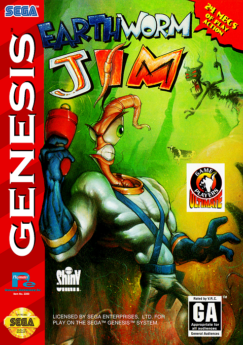
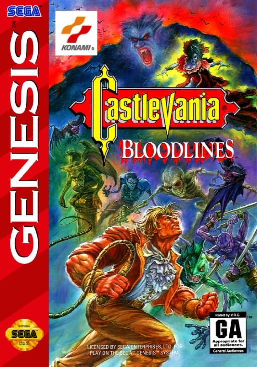
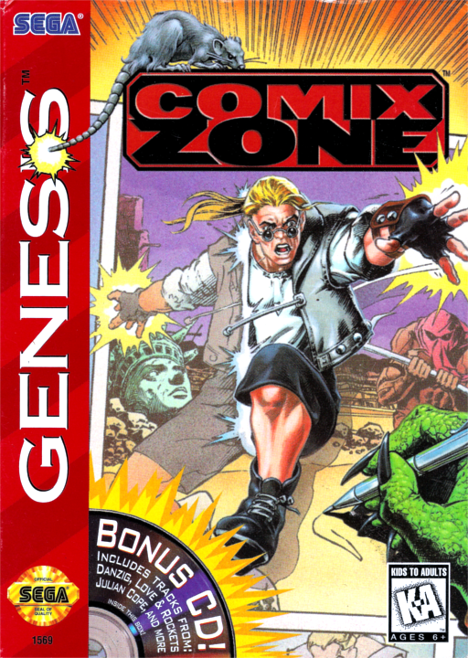
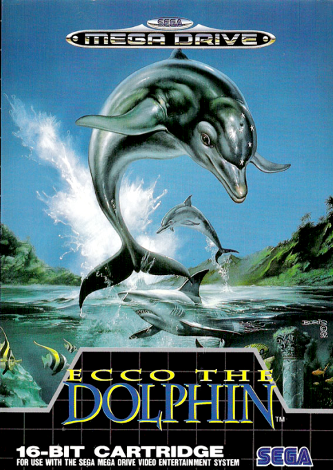
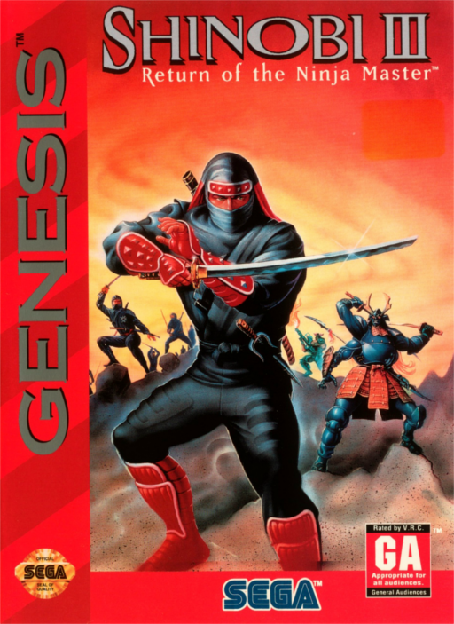
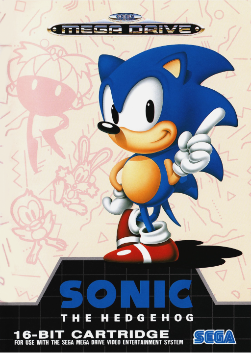
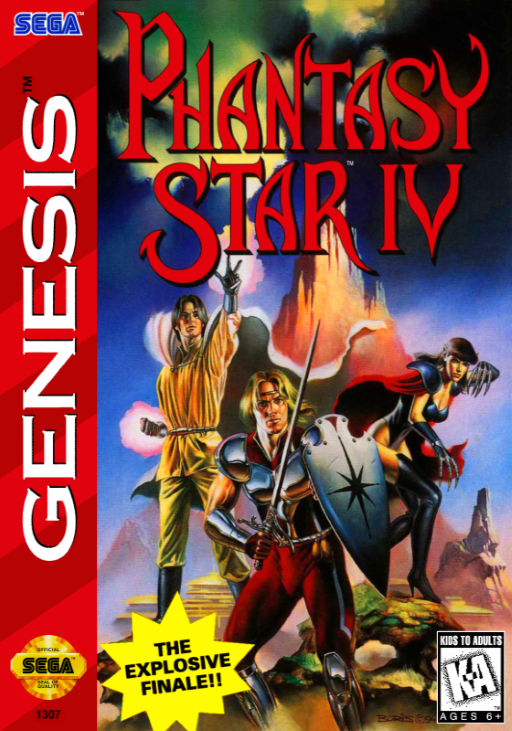
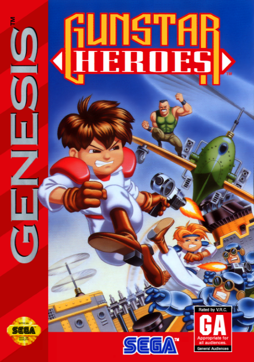
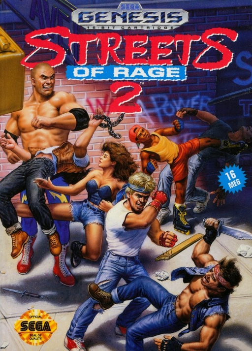

SEGA MEGA DRIVE / GENESIS · 16 BITS · LOS MEJORES
MEGA DRIVE TOP MUNDIAL
LOS 10 MEJORES JUEGOS DE LA 16 BITS DE SEGA
PRESENTACION
DEL #10 AL #1
La consola de la actitud, la velocidad y el blast processing. Beat'em ups legendarios, RPGs maduros y el erizo que desafio a Mario. Estos son los 10 que la hicieron grande. Empezamos desde abajo.
#10
TOP MUNDIAL

MEGA DRIVE
TARROVISIONCH 10
NO SIGNAL
Inserta gameplay aqui
EARTHWORM JIM
MEGA DRIVE · 1994 · SHINY
▶ POR QUEAnimacion estilo dibujo animado adelantada a su epoca, humor absurdo y jefes locos. Un gusano en traje robotico que parecia caricatura jugable. Debut perfecto de Shiny.
#9
TOP MUNDIAL

MEGA DRIVE
TARROVISIONCH 09
NO SIGNAL
Inserta gameplay aqui
CASTLEVANIA: BLOODLINES
MEGA DRIVE · 1994 · KONAMI
▶ POR QUEEl unico Castlevania original del Genesis. Dos personajes jugables y efectos graficos que exprimian el hardware: agua deformandose, rotaciones imposibles. Konami a fondo.
#8
TOP MUNDIAL

MEGA DRIVE
TARROVISIONCH 08
NO SIGNAL
Inserta gameplay aqui
COMIX ZONE
MEGA DRIVE · 1995 · SEGA
▶ POR QUEJuegas DENTRO de un comic, saltando entre viñetas. Concepto unico, arte brutal y banda sonora rockera. Salio tarde pero quedo como joya de culto absoluta.
#7
TOP MUNDIAL

MEGA DRIVE
TARROVISIONCH 07
NO SIGNAL
Inserta gameplay aqui
ECCO THE DOLPHIN
MEGA DRIVE · 1992 · NOVOTRADE / SEGA
▶ POR QUEUn delfin explorando el oceano, con viajes en el tiempo y aliens. Atmosferico, hermoso y dificil como pocos. Una experiencia rara y memorable que no se parece a nada.
#6
TOP MUNDIAL

MEGA DRIVE
TARROVISIONCH 06
NO SIGNAL
Inserta gameplay aqui
SHINOBI III: RETURN OF THE NINJA MASTER
MEGA DRIVE · 1993 · SEGA
▶ POR QUEEl ninja Joe Musashi en su mejor forma: velocidad, niveles a caballo y en surf, jefes enormes y control perfecto. Para muchos, el mejor juego de accion de la consola.
#5
TOP MUNDIAL

MEGA DRIVE
TARROVISIONCH 05
NO SIGNAL
Inserta gameplay aqui
SONIC THE HEDGEHOG
MEGA DRIVE · 1991 · SONIC TEAM
▶ POR QUEEl juego que le dio cara a Sega y desafio a Mario. Velocidad nunca vista, Green Hill Zone iconica y actitud noventera pura. Cambio la guerra de las consolas para siempre.
#4
TOP MUNDIAL

MEGA DRIVE
TARROVISIONCH 04
NO SIGNAL
Inserta gameplay aqui
PHANTASY STAR IV
MEGA DRIVE · 1995 · SEGA
▶ POR QUEEl cierre epico de la saga RPG de Sega. Sistema de combos de tecnicas, historia madura y arte con viñetas tipo manga. El mejor RPG de la consola, sin discusion.
#3
PODIO

MEGA DRIVE
TARROVISIONCH 03
NO SIGNAL
Inserta gameplay aqui
GUNSTAR HEROES
MEGA DRIVE · 1993 · TREASURE
▶ POR QUEEl debut de Treasure y una clase magistral de run-and-gun. Jefes gigantes, combinacion de armas, accion sin respiro. Tecnicamente uno de los juegos mas asombrosos del Genesis.
#2
PODIO

MEGA DRIVE
TARROVISIONCH 02
NO SIGNAL
Inserta gameplay aqui
STREETS OF RAGE 2
MEGA DRIVE · 1992 · SEGA
▶ POR QUEEl mejor beat'em up de su generacion. Banda sonora de Yuzo Koshiro que definio el sonido de los 90, golpes con peso y co-op perfecto. Axel y Blaze, inmortales.
#1
EL TRONO

MEGA DRIVE
TARROVISIONCH 01
NO SIGNAL
Inserta gameplay aqui
SONIC THE HEDGEHOG 2
MEGA DRIVE · 1992 · SONIC TEAM
▶ POR QUEEl pico absoluto. Tails, el spin dash, niveles mas grandes y veloces, la Death Egg. El juego que consolido a Sega como la numero uno por un momento. Velocidad perfecta.
ANALISIS DEL TOP
EL VEREDICTO
La Mega Drive fue la consola de la velocidad, la actitud y el co-op. Beat'em ups, run-and-guns y un erizo que por un momento le gano la guerra a Nintendo. En Latam fue la reina indiscutida. Catalogo con personalidad propia, distinto al pulcro SNES.
TU TURNO
¿CUAL FALTO?
¿De acuerdo con Sonic 2 en el trono? ¿Donde dejarias Streets of Rage 2? ¿Que joya falto? Dejalo en los comentarios. Suscribete a Retrotarros: ya viene el Top Precios de Mega Drive, y despues Dreamcast y Saturn.